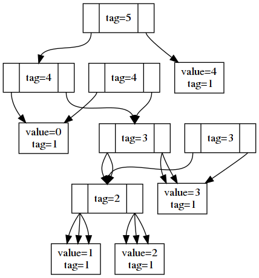

Writing A C++ 20 Module
Steve Downey
© 2021 Bloomberg Finance L.P. All rights reserved.
Abstract
This talk will walk through creating a C++ 20 module interface and the implementation of a simple data structure, a functional tree.
This will cover how to control export of types and inline code, hiding an implementation, and making sure that necessary un-exported definitions are still reachable.
Overview of C++ 20 Modules
Not packages - Hygiene
In the run up to C++ 20 there was a lot of hope that modules solved packaging.
- They don't.
- At All.
- They add to the problem.
- Need to deliver source interfaces that consumers will compile.
Module Units
Modules extend the concept of translation unit.
Module Unit- a TU that contains a module declaration.
Named Module- the collection of
Module Unitswith module name. Module Interface Unit- a module unit that
exports. Module Implementation Unit- a module unit that does not.
Primary Module Interface Unit- There will be exactly one MIU that is not a partition.
Module Partition- Part of a module. MIU partitions must be exported by the PMIU.
Example 1 (from the IS)
// Translation unit #1: PMI export module A; export import :Foo; export int baz(); // Translation unit #2: Partion A:Foo export module A:Foo; import :Internals; export int foo() { return 2 * (bar() + 1); } // Translation unit #3: Partition A:Internals module A:Internals; int bar(); // Translation unit #4: an implementation unit module A; import :Internals; int bar() { return baz() - 10; } int baz() { return 30; }
The model is retrofitting existing tech
The standard is complicated because it is trying not to describe an implementation.
A module interface TU produces an object file and a BMI.
A module TU is a TU and produces an object file.
The consumer of a module reads the BMI.
The program links the library or objects from the module.
Exports
Exports make names from the module available to the consumers.
Imports
Makes names from the module visible in the current TU.
export import M;
makes the module M's exported names visible to the importer of a module.
Private Module Fragment
You can write Java style single file modules.
In the Primary Module Interface Unit you can write:
module :private;
And the names and definitions thereafter are not reachable from the importers.
Instantiation Context
How we figure out what declarations are in play for ADL and which are reachable.
Reachability
Reachable isn't the same as name availability.
"Whether a declaration is exported has no bearing on whether it is reachable."
A translation unit is reachable from P
- if the unit P is in has an interface dependency on U
- if the unit P is in imports U
- other unspecified reasons you should not depend on
A declaration is reachable from P
- if it appears before P in the same TU
- it is not discarded, is in a unit reachable from P, not in a PMF.
The things you export make more things reachable
This allows consumers to use the things you export, without having to export everything.
// Translation unit #1: export module A; struct X {}; export using Y = X; // Translation unit #2: module B; import A; Y y; // OK, definition of X is reachable X x; // error: X not visible to unqualified lookup
Reachability is ABI
The component fringetree to be modulated
Pure persistent functional tree
Fringe tree is an intentionally poor persistent functional binary tree implementation that grew out of wanting an example to work on the 'same fringe' problem.
Persistent, in this context, means updating the tree doesn't change observable tree and produces a new tree.
Functional implies immutability which means unchanging state can be shared.
Modeled after fingertrees, which are far more complicated.
Data is stored at the edges, the fringe of the tree, internal nodes have children.
Uses std::variant<>, std::shared_ptr<>, and visitors
- Shared ptr isn't that bad.
std::variantis terribly expensive.As are
std::variantvisitors.The actual interface of the tree does not need them.
Poster child for modules.
Code
The template parameter Value is the type held in the fringe.
The template parameter Tag is a monoidal type describing the tree.
The nodes of the tree are one of
- Branch
- points to left and right Tree
- Leaf
- holds data of types value and tag
- Empty
- A nil value. Avoids having nulls.
- Tree
- a variant of <Empty, Leaf, Branch>
Branch
template <typename Tag, typename Value> class Branch { Tag tag_; std::shared_ptr<Tree<Tag, Value>> left_; std::shared_ptr<Tree<Tag, Value>> right_; /// };
Leaf
template <typename Tag, typename Value> class Leaf { Tag tag_; Value v_; /// };
Empty
template <typename Tag, typename Value> class Empty { public: Empty(){}; auto tag() const -> Tag { return {}; }; };
Tree
template <typename Tag, typename Value> class Tree { private: std::variant<Empty_, Leaf_, Branch_> data_; public: Tree(Empty_ const& empty) : data_(empty) {} Tree(Leaf_ const& leaf) : data_(leaf) {} Tree(Branch_ const& branch) : data_(branch) {} /// template <typename Callable> auto visit(Callable&& c) const { return std::visit(c, data_); } };
Shared nodes
Operations on Trees produce Trees that share nodes with the original.
Tree exposes factory functions that return shared_ptr<Tree> constructing empty, leaf, and branch. A "smart constructor" idiom.
Tag
The tag of a branch is the plus operator of the tags of it's left and right. The tag type is required to be monoidal, that is have
- A binary operator+(Tag, Tag) -> Tag
- Have an identity element such that t + identity == t
Examples:
- The + operator on numbers.
- Concatentation on strings or linear containers.
- min and max.
Tags can be used for index lookups, priority, and other things.
Exposes function objects as interface
Depth
constexpr inline struct depth { template <typename T, typename V> auto operator()(Empty<T, V> const&) const -> T { return 0; } template <typename T, typename V> auto operator()(Leaf<T, V> const&) const -> T { return 1; } template <typename T, typename V> auto operator()(Branch<T, V> const& b) const -> T { auto leftDepth = (b.left()->visit(*this)) + 1; auto rightDepth = (b.right()->visit(*this)) + 1; return (leftDepth > rightDepth) ? leftDepth : rightDepth; } } depth_; constexpr auto depth = [](auto tree) { return tree->visit(depth_); };
Flatten to vector
constexpr inline struct flatten { template <typename T, typename V> auto operator()(Empty<T, V> const&) const -> std::vector<V> { return std::vector<V>{}; } template <typename T, typename V> auto operator()(Leaf<T, V> const& l) const -> std::vector<V> { std::vector<V> v; v.emplace_back(l.value()); return v; } template <typename T, typename V> auto operator()(Branch<T, V> const& b) const -> std::vector<V> { auto leftFlatten = b.left()->visit(*this); auto rightFlatten = b.right()->visit(*this); leftFlatten.insert(leftFlatten.end(), rightFlatten.begin(), rightFlatten.end()); return leftFlatten; } } flatten_; constexpr auto flatten = [](auto tree) { return tree->visit(flatten_); };
Example
auto t = Tree::branch( Tree::branch(Tree::leaf(1), Tree::leaf(2)), Tree::leaf(3) ); auto t1 = prepend(0, t); auto t2 = append(4, t1); // printer(std::cout, t_); std::cout << "digraph G {\n"; printer_ p(std::cout); t->visit(p); t1->visit(p); t2->visit(p); std::cout << "}\n";
Just t

Output from example

Is an experimental TOY
https://github.com/steve-downey/fringetree
Variant and visit can model sum type systems.
Convinced me that we need pattern matching.
Considerations for a module
Not new decisions, but more control
Export has fine-grained control.
Can chose everything or just particular names.
What to export
Export what clients need to name.
What NOT to export
Implementation details and infrastructure.
Exporting code for inlining
If you want to export code as part of your interface you must explicitly inline. Functions defined in the class declaration are not implicitly inline in a module. Inlines can not refer to anything with internal linkage.
Organization is not exposed to customers
You can use partitions, the PMF, module implementation units, and all of it looks the same to customers.
Re-exporting a name may not. Names are 'attached' to modules, and that may be part of the name.
Hello, World!
Hello module
module; #include <iostream> #include <string_view> export module smd.hello; export namespace hello { void hello(std::string_view name) { std::cout << "Hello, " << name << "! \n"; } } // namespace hello
Main
import smd.hello; int main() { hello::hello("Steve"); }
Makefile
main : main.o hello.o g++-11 -o main main.o hello.o main.o : main.cpp gcm.cache/smd.hello.gcm g++-11 -fPIC -fmodules-ts -x c++ -o main.o -c main.cpp hello.o: hello.cpp g++-11 -fPIC -fmodules-ts -x c++ -o hello.o -c hello.cpp gcm.cache/smd.hello.gcm: hello.o @test -f $@ || rm -f hello.o @test -f $@ || $(MAKE) hello.o clean: rm hello.o main.o gcm.cache/smd.hello.gcm clean-gcm: rm gcm.cache/smd.hello.gcm test: ./main
Code
Primary module interface
module; // global module fragment #include <non_module.h> export module foo; export import :part; // exports foo:part a module partition import std; // <= maybe we can do better someday import bar; // <= not exported, reachable export namespace foo { // everything here is exported int theAnswer(); }
Every name that clients consume is exported through the primary module interface. Those may be rexported from module partitions or from other modules.
Note that modules compose
export module foo; export import foo.bar; export import foo.baz; export import foo.quux;
As long as there is a strict dependency directed acyclic graph (DAG) between the more fine grained modules.
. is a convention. It has no hierarchical meaning to the compiler.
Module implementation unit(s)
These are almost the same as a regular translation unit, except they have access to module linkage names.
module foo; int foo::theAnswer() { // foo is the namespace, not the module. return 42; }
Module partitions to decompose large modules
export module foo:part; export int quux_foos(int);
No one outside may access the partition. You can not import foo:part.
Access to names with module linkage
Your module partitions have access to all of the names and definitions from the module interface.
Private Fragment
A special partition that can appear in a primary module interface. They allow unexported and unreachable definitions to be included in the PMI.
From The Standard [module.private.frag]:
export module A; export inline void fn_e(); // error: exported inline function fn_e not defined // before private module fragment inline void fn_m(); // OK, module-linkage inline function static void fn_s(); export struct X; export void g(X *x) { fn_s(); // OK, call to static function in same translation unit fn_m(); // OK, call to module-linkage inline function } export X *factory(); // OK module :private; struct X {}; // definition not reachable from importers of A X *factory() { return new X (); } void fn_e() {} void fn_m() {} void fn_s() {}
The C++ Standard tries to avoid Policy
The private fragment exists to allow single file modules.
Many people want them.
It's not clear this is the best, or a good, way to deploy modules at scale. Combining the interface and implementation is likely to convince build systems that implementation changes require rebuilds of all interface dependers.
Barring a mythical "smart enough" build system.
Building modules
Your build system will not survive contact
In particular the name of a module in code is not a filename.
Module dependencies require some parsing of C++, which is hard. The standard tries to make it almost regexpable.
Must build in DAG order
Before a module can imported, it has to be built.
If you are lucky, if you build in the wrong order, the module interface won't be available.
Stale module interfaces will seem to work but will be wrong.
Back to the future: `makedeps`
The current model is the compiler emits dependency information as it compiles. This works because if deps don't exist, you need to compile, and deps can't change without files changing, causing a recompile.
Before that there was a tool makedeps. Because doing it by hand is impossible to keep correct.
makedeps runs before the main build.
Compiler vendors are working on tools to emit what modules are direct dependency and what module a translation unit produces.
Packaging modules is an open question
We don't have a solution yet. We might be able to extend pkgconfig metadata. There's divergence in compiler flags.
CMI are fragile - plan on delivering source
You will not be able to ship your compiled module interface. They depend on compiler internals.
I might be able to. We version our compiler along with libraries and packages.
We ship what's basically an OS distro with just userland every 15 minutes.
Modulating Fringetree
Successful with Visual Studio
(yesterday)
ICEd GCC
Segfaults in reporting the error it was reporting.
Clang somewhere in between
Didn't ICE, but reachability issues.
Actual work was straightforward
At least partly because I'm in the habit of Lakosian components which are always strictly DAG and have tests.
Convincing Visual Studio to export the interface was more frustrating. I'm not a fan of GUIs for this. "Simply open the X dialog and …" is not.
But it worked.
The header moved to the interface file (.ixx)
I don't know what our eventual style guide will be here.
// fringtree.ixx module; #include <memory> #include <variant> #include <vector> export module smd.fringetree; namespace fringetree {
- I'm claiming the smd. module space. Find your own. 😈
- I'm not exporting the fringetree namespace.
Exporting Tree Type
The node types are made reachable.
template <typename Tag, typename Value> class Leaf { // }; template <typename Tag, typename Value> class Branch { // }; template <typename Tag, typename Value> class Empty { // }; export // <=== Make the Tree template available template <typename Tag, typename Value> class Tree // };
Using Tree
Clients interact with Tree, and want to be able to name Tree.
using namespace fringetree; using Tree = Tree<int, int>; auto t = Tree::branch(Tree::branch(Tree::leaf(1), Tree::leaf(2)), Tree::leaf(3));
Inline function definitions
inline isn't unless you say so.
export template <typename Tag, typename Value> class Tree { public: bool isEmpty() { return std::holds_alternative<Empty_>(data_); } }
The definition of branch is not inlined in client code. Trade-offs with exposing implementation vs optimization opportunities.
Exporting function objects
constexpr inline struct breadth { template <typename T, typename V> auto operator()(Empty<T, V> const&) const -> T { return 0; } template <typename T, typename V> auto operator()(Leaf<T, V> const&) const -> T { return 1; } template <typename T, typename V> auto operator()(Branch<T, V> const& b) const -> T { return b.left()->visit(*this) + b.right()->visit(*this); } } breadth_; export constexpr auto breadth = [](auto tree) { return tree->visit(breadth_); };
(Note Visual Studio disagrees that I have to export breadth)
breadth is a lambda that uses the breadth_ visitor object.
Tests pass
Having test coverage is very good. It helps you not fool yourself.